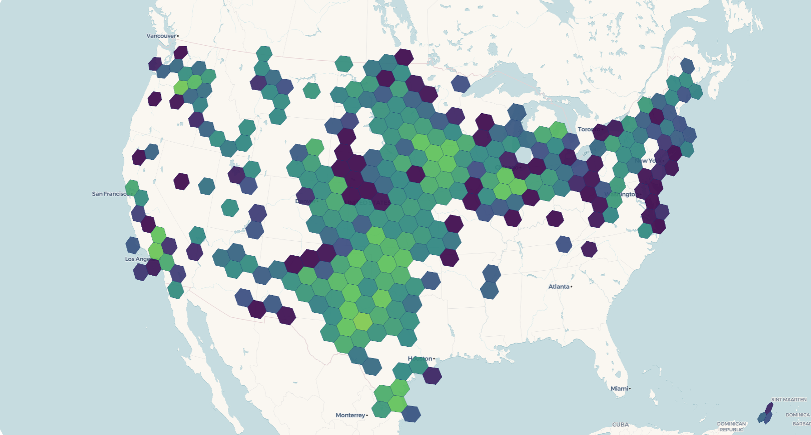
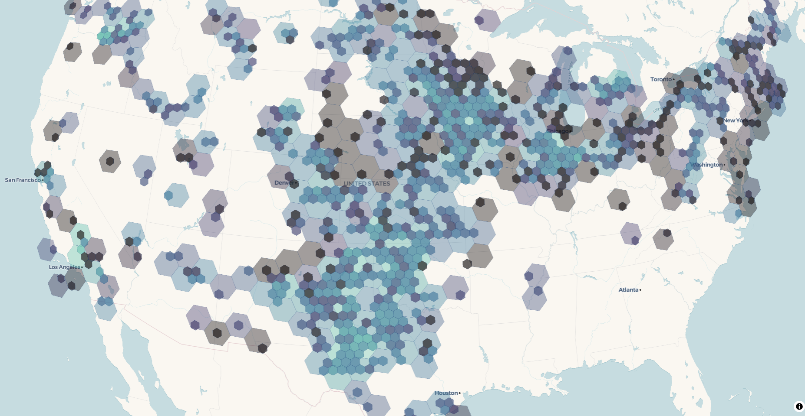
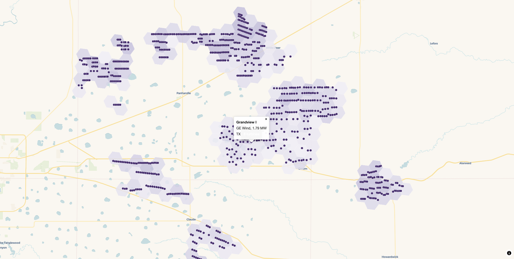

library(freestiler)
library(sf)
url <- "https://energy.usgs.gov/api/uswtdb/v1/turbines?select=t_state,p_name,t_manu,t_cap,xlong,ylat"
turbines <- jsonlite::fromJSON(url)
turbines$capacity_mw <- turbines$t_cap / 1000 # t_cap is in kilowatts
turbines <- st_as_sf(turbines, coords = c("xlong", "ylat"), crs = 4326)
freestile_h3(
turbines,
"turbines.pmtiles",
min_zoom = 2,
max_zoom = 12,
base_zoom = 10
)When a dataset has tens of thousands of points concentrated in a few places, neither rendering every individual point nor collapsing them into a single “200,000+” cluster badge tells you what you want to know. freestile_h3() aggregates points into H3 hexagons at zoom-appropriate resolutions: low zooms show coarse hexagons that summarize whole regions, intermediate zooms show progressively finer hexagons, and base_zoom and above show the underlying points. You pick the aggregation rule yourself: a count, a sum, a mean, a max, or anything else you can write in DuckDB SQL.
The result behaves like point clustering on a map, but with a fixed hex grid instead of distance-based clusters. It writes a single .pmtiles archive that you can drop on a static host and render with view_h3_tiles() or your own mapgl style.
freestile_h3() is available in both the R and Python packages with the same arguments. This article uses R for the runnable examples and shows the Python equivalent where the two APIs differ. For Python installation, see the Python Setup article.
Requirements
freestile_h3() uses DuckDB and its H3 community extension to do the binning. On the first call, DuckDB downloads the extension automatically (INSTALL h3 FROM community), so you need network access that first time.
In R, install the DBI and duckdb packages (and mapgl for viewing):
install.packages(c("DBI", "duckdb", "mapgl"))In Python, install the h3 extra, which pulls in the duckdb package:
pip install 'freestiler[h3]'Your first hex tileset
Let’s tile the US Wind Turbine Database, the roughly 75,000 turbines the USGS tracks across the country. The API returns one row per turbine with a longitude, a latitude, and the turbine’s nameplate capacity in kilowatts.
The same call in Python takes a GeoDataFrame:
import pandas as pd
import geopandas as gpd
from freestiler import freestile_h3
url = "https://energy.usgs.gov/api/uswtdb/v1/turbines?select=t_state,p_name,t_manu,t_cap,xlong,ylat"
turbines = pd.read_json(url)
turbines["capacity_mw"] = turbines["t_cap"] / 1000 # t_cap is in kilowatts
turbines = gpd.GeoDataFrame(
turbines,
geometry=gpd.points_from_xy(turbines.xlong, turbines.ylat),
crs="EPSG:4326",
)
freestile_h3(turbines, "turbines.pmtiles", min_zoom=2, max_zoom=12, base_zoom=10)freestile_h3() writes one MVT source-layer per H3 resolution (h3_r02, h3_r03, and so on) plus a points source-layer for the raw data. With the default fade = FALSE, those layers have disjoint zoom windows, so the map swaps hexagon resolutions cleanly as you zoom and replaces hexagons with individual turbines at base_zoom.
Choosing aggregations
The agg argument controls what summary properties each hexagon carries. The simplest case counts the points in each hex; agg = "count" is the default.
freestile_h3(turbines, "turbines.pmtiles", agg = "count")For richer summaries, pass a named vector of SQL aggregations:
freestile_h3(
turbines, "turbines.pmtiles",
agg = c(
n = "COUNT(*)",
total_mw = "SUM(capacity_mw)",
avg_mw = "AVG(capacity_mw)"
)
)That gives each hexagon a turbine count (n), the total installed capacity in megawatts (total_mw), and the average turbine size (avg_mw), which has climbed steadily as turbine technology has grown. If you’d rather not write SQL, pass a named list of c(fn, column) pairs instead:
freestile_h3(
turbines, "turbines.pmtiles",
agg = list(
n = c("count", "*"),
total_mw = c("sum", "capacity_mw"),
avg_mw = c("mean", "capacity_mw")
)
)Supported function names: count, sum, mean (alias avg), min, max, median.
In Python, agg is a dictionary. Map names to SQL strings, or to (fn, column) tuples:
freestile_h3(
turbines, "turbines.pmtiles",
agg={"n": "COUNT(*)", "total_mw": "SUM(capacity_mw)"},
)
freestile_h3(
turbines, "turbines.pmtiles",
agg={"n": ("count", "*"), "total_mw": ("sum", "capacity_mw")},
)Viewing
view_h3_tiles() reads the archive metadata, finds the h3_r* layers and the points layer, and builds a mapgl map with one shared color scale across the hex resolutions. It accepts a quick-look default ramp for a first pass; for a finished map, pass explicit stops:
view_h3_tiles(
"turbines.pmtiles",
agg_column = "n",
stops = list(
values = c(1, 10, 100, 1000, 10000),
colors = viridisLite::viridis(5)
)
)
The default scale (stops = NULL) spans 1, 10, 100, 1000, 10000 with the viridis palette. That’s fine for a first look, but you’ll usually want to set stops from your own data’s range.
view_h3_tiles() is an R helper. From Python, serve the archive with a static file server that supports byte-range requests (the built-in http.server does not), then style it in mapgl or MapLibre GL JS. If you work in both languages, the Positron IDE lets you tile in Python and map in R in the same session.
DuckDB SQL input
If your points already live in DuckDB, or in a file it can read (Parquet, CSV, GeoPackage, or Shapefile), skip the in-memory roundtrip and pass SQL directly. Save the turbine coordinates to a file once, then let DuckDB build the geometry and the capacity column from its columns:
write.csv(
jsonlite::fromJSON(
"https://energy.usgs.gov/api/uswtdb/v1/turbines?select=xlong,ylat,t_cap"
),
"turbines.csv", row.names = FALSE, na = ""
)
freestile_h3(
"SELECT ST_Point(xlong, ylat) AS geometry, t_cap / 1000 AS capacity_mw
FROM read_csv_auto('turbines.csv')",
"turbines.pmtiles",
agg = c(n = "COUNT(*)", total_mw = "SUM(capacity_mw)"),
source_crs = "EPSG:4326"
)The Python call is the same, with a dictionary for agg:
import pandas as pd
pd.read_json(
"https://energy.usgs.gov/api/uswtdb/v1/turbines?select=xlong,ylat,t_cap"
).to_csv("turbines.csv", index=False)
freestile_h3(
"""SELECT ST_Point(xlong, ylat) AS geometry, t_cap / 1000 AS capacity_mw
FROM read_csv_auto('turbines.csv')""",
"turbines.pmtiles",
agg={"n": "COUNT(*)", "total_mw": "SUM(capacity_mw)"},
source_crs="EPSG:4326",
)read_csv_auto() and read_parquet() are built into DuckDB, so they work the same from R and Python. (Reading remote files over HTTP needs DuckDB’s httpfs and json extensions, which the R duckdb package does not always bundle, so download to a local file first.) Multi-statement SQL works too: setup statements (CREATE VIEW, LOAD, and so on) run first, and the final SELECT is the input. Here we keep only the utility-scale turbines over 2 MW:
freestile_h3(
paste(
"CREATE TEMP VIEW big AS",
" SELECT * FROM read_csv_auto('turbines.csv') WHERE t_cap > 2000;",
"SELECT ST_Point(xlong, ylat) AS geometry, t_cap / 1000 AS capacity_mw FROM big"
),
"big_turbines.pmtiles",
source_crs = "EPSG:4326"
)Pass source_crs whenever your SQL returns non-WGS84 geometry. If you omit it, freestile_h3() assumes EPSG:4326 and warns once.
Cross-fade between resolutions
By default, hexagon resolutions swap cleanly at zoom boundaries. To blend the transitions instead, so coarser hexes fade out as finer ones fade in, set fade = TRUE:
freestile_h3(
turbines, "turbines_fade.pmtiles",
agg = "count",
min_zoom = 2, max_zoom = 12, base_zoom = 10,
fade = TRUE # default fade_overlap = 1
)
view_h3_tiles("turbines_fade.pmtiles", agg_column = "count", palette = "mako")
With fade = TRUE, adjacent hex layers overlap by fade_overlap zoom levels. view_h3_tiles() detects the overlap and gives each layer a trapezoidal fill_opacity envelope so the renderer cross-fades between resolutions. Use a larger fade_overlap (say 2) for a slower, more diffuse blend, or the default 1 for a tighter handoff.
Layer naming
Each MVT source-layer is named "<hex_layer_prefix>_r<resolution>". The default prefix is "h3", so you’ll see layer ids like h3_r02, h3_r03, up through h3_r07. The raw-points layer defaults to "points". You can change either:
freestile_h3(
turbines, "turbines.pmtiles",
hex_layer_prefix = "wind", # produces "wind_r02", "wind_r03", ...
point_layer_name = "turbines"
)Customizing the zoom to H3 resolution mapping
The defaults pair each tile zoom with an H3 resolution whose hexagon edge length roughly matches a tile pixel at that zoom. Override the mapping with h3_resolutions:
# res 4 at zoom 0-3, res 6 at zoom 4-6, then points at 7+
freestile_h3(
turbines, "turbines.pmtiles",
min_zoom = 0, max_zoom = 10, base_zoom = 7,
h3_resolutions = c(4, 4, 4, 4, 6, 6, 6)
)The override accepts:
-
NULLto use the built-in defaults. - An unnamed integer vector with one entry per hex zoom (
length(min_zoom:(base_zoom - 1))), mapped positionally. - A sparse named integer vector keyed by zoom number, with defaults filling the gaps.
All resolutions must be integers in 0:15. The same resolution appearing in non-contiguous zoom runs is rejected, since the layer names would collide on h3_rNN. In Python, h3_resolutions takes a list for the positional form or a dict keyed by zoom for the sparse form.
Building a production map with mapgl
view_h3_tiles() is a quick preview. For a map you’d actually ship, build it directly with mapgl, which gives you full control over the color scale, the fade envelope, and the tooltips. The pattern is to read the layer list from the archive metadata, add one fill layer per H3 resolution, and add a circle layer for the points.
First build a fade archive that carries the columns you want to show:
freestile_h3(
turbines, "turbines_fade.pmtiles",
agg = c(n = "COUNT(*)", total_mw = "SUM(capacity_mw)"),
min_zoom = 2, max_zoom = 12, base_zoom = 10,
fade = TRUE
)Then style it. The metadata lists every layer in the archive, so pull out the hex layers with purrr::keep(), sort them coarse to fine, and fold a fill layer onto the map for each one with purrr::reduce(). Every hex layer shares one color scale and gets a zoom-keyed fill_opacity envelope that fades it in and back out across its window, so overlapping resolutions cross-fade:
library(mapgl)
library(purrr)
library(stringr)
serve_tiles(".", port = 8080)
meta <- pmtiles_metadata("turbines_fade.pmtiles")
# pull the hex layers out of the metadata, ordered coarse to fine
hex_layers <- meta$metadata$vector_layers |>
keep(\(layer) str_starts(layer$id, "h3_r")) |>
map(\(layer) list(id = layer$id, minzoom = layer$minzoom, maxzoom = layer$maxzoom))
hex_layers <- hex_layers[order(map_dbl(hex_layers, "minzoom"))]
points_minzoom <- meta$metadata$vector_layers |>
keep(\(layer) layer$id == "points") |>
pluck(1, "minzoom")
# one shared color scale across every resolution
fill <- interpolate(
column = "n",
values = c(1, 10, 100, 1000),
stops = RColorBrewer::brewer.pal(4, "Purples")
)
base_map <- maplibre(
bounds = c(meta$min_longitude, meta$min_latitude,
meta$max_longitude, meta$max_latitude)
) |>
add_pmtiles_source(id = "turbines", url = "http://localhost:8080/turbines_fade.pmtiles")
# fade each resolution in and back out across its zoom window
add_hex_layer <- function(map, layer) {
add_fill_layer(
map,
id = paste0("fill-", layer$id),
source = "turbines",
source_layer = layer$id,
fill_color = fill,
fill_opacity = interpolate(
property = "zoom",
values = c(layer$minzoom, layer$minzoom + 1, layer$maxzoom, layer$maxzoom + 1),
stops = c(0, 0.85, 0.85, 0)
),
fill_outline_color = "rgba(255, 255, 255, 0.25)",
min_zoom = layer$minzoom,
max_zoom = layer$maxzoom + 1, # MapLibre maxzoom is exclusive
tooltip = "{n} turbines", # brace template (mapgl >= 0.5.0)
tooltip_style = tooltip_style("dark")
)
}
reduce(hex_layers, add_hex_layer, .init = base_map) |>
add_circle_layer(
id = "turbine-points",
source = "turbines",
source_layer = "points",
circle_color = "#3b1f6b",
circle_radius = 4,
circle_stroke_color = "#ffffff",
circle_stroke_width = 0.5,
circle_opacity = 0.9,
min_zoom = points_minzoom,
popup = "<strong>{p_name}</strong><br>{t_manu}, {capacity_mw} MW<br>{t_state}",
popup_style = popup_style("light")
)
Zoom past base_zoom and the hexes give way to the individual turbines. Click one and the popup brace template fills a card straight from the point’s columns: the project name in bold, the manufacturer, the turbine’s capacity, and the state. tooltip works the same way for hover, and both accept several {column} references at once. Wrap a numeric column in number_format() if you want to control how it reads.
Limitations in this release
- Points only. Polygon and line aggregations (through centroids or
h3_polygon_to_cells) may come in a future release. -
MULTIPOINTis not handled. Cast toPOINTfirst withsf::st_cast(x, "POINT")in R,gdf.explode()in Python, orST_Centroidin SQL. -
view_h3_tiles()is an R helper. Python users serve the archive and style it in mapgl or MapLibre GL JS.